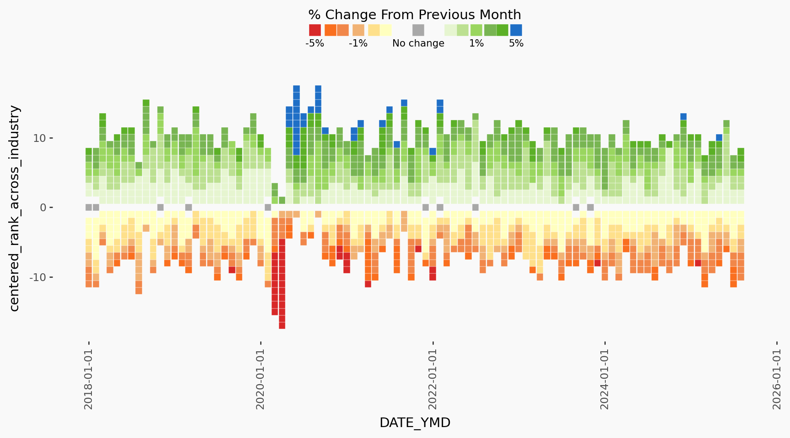
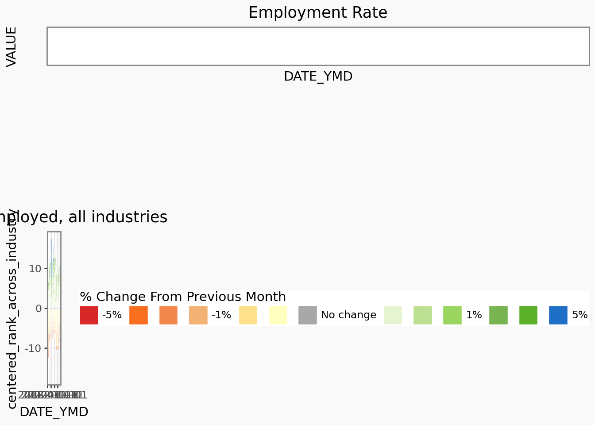
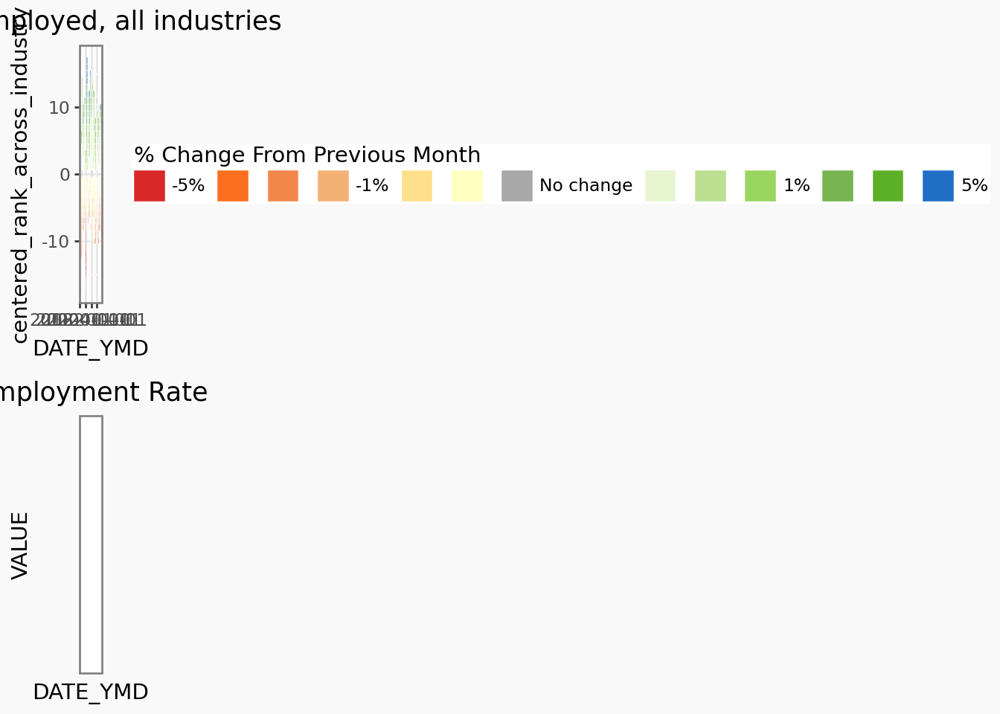
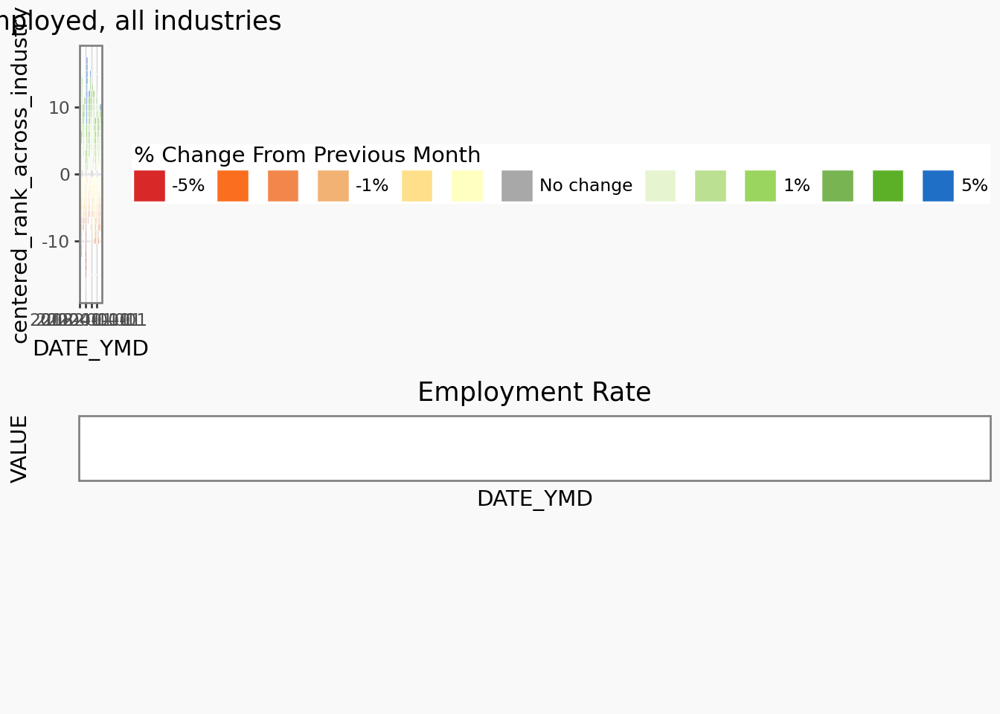

from pyprojroot import here
import mpl_fontkit as fk
from brand_yml import BrandThings that didn’t work
This section is a non-exhaustive list problems I wasn’t able to solve with plotnine.
Note that this tutorial was made with plotnine version 0.15.0. I fully expect that this appendix will likely very quickly become irrelevant with the many anticipated improvements that are coming to plotnine in the near future.
Horizontal legend with horizontal legend text
Initially I wanted a horizontal legend for the colors. But in order to remove the whitespace between keys, I discovered that the text needs to be smaller than the legend keys, otherwise they “push” the legend keys apart in uneven manner. I attempted to (unsuccesfully) address this by making the legend text small, eliminating as much text as possible (e.g. removing the “%” characters for -0.50 and 0.50), and lastly increasing the legend key size.
But it still didn’t really work out the way I hoped, so I stuck with a vertical legend instead.

Composing in plotnine is not like R’s patchwork
I wanted to add a line plot of employment numbers to the heatmap. Given the similar syntax in plotnine’s compose to R’s patchwork, I thought the behaviour would be similar.
One discrepancy is that there is no way to specify the relative size of component plots. But this might be addressed very soon #980
It is possible to (rather labourously) pad plots by using plot_spacers, which I attemp unsuccessfully below:
INDUSTRY = "Total employed, all industries"
plot_data_subsetted = labour_processed_cutted.filter(pl.col("Industry") == INDUSTRY)
plot_highlight_industry = (
plot
+ geom_point(data=plot_data_subsetted, color="black", fill="black")
+ labs(title=INDUSTRY, subtitle="")
)
plot_highlight_industry
line_plot = (
ggplot(
labour_processed_cutted.filter(
pl.col("YEAR") >= FILTER_YEAR[0],
pl.col("YEAR") <= FILTER_YEAR[1],
pl.col("Industry").is_in([INDUSTRY]),
),
aes(x="DATE_YMD", y="VALUE"),
)
+ geom_line(color="black")
+ theme_tufte()
+ theme(
legend_position="none",
plot_title=element_text(size=10, ha="left"),
axis_ticks_length=3,
axis_ticks_major_y=element_line(),
axis_text_y=element_text(size=8, margin={"r": 2, "l": 2, "units": "pt"}),
plot_background=element_rect(fill=COLOR_BACKGROUND, color=COLOR_BACKGROUND),
)
+ scale_y_continuous(
breaks=mb.breaks_extended(3),
labels=lambda x: ["{:.0f}K".format(xi / 1000) for xi in x],
)
+ labs(title="Employment Rate")
)
from plotnine.composition import Stack, plot_spacer
p1 = Stack(
[
line_plot + scale_x_datetime(expand=(0, 0)),
plot_spacer(),
plot_spacer(),
plot_spacer(),
]
)
p2 = (
plot_highlight_industry
+ theme(plot_title=element_blank(), plot_subtitle=element_blank())
+ scale_x_datetime(expand=(0, 0))
)
Stack([p1, p2]) & scale_x_datetime(expand=(0, 0)) & theme_bw() & theme(
plot_background=element_rect(fill=COLOR_BACKGROUND, color=COLOR_BACKGROUND)
) /home/runner/work/labourcan/labourcan/.venv/lib/python3.13/site-packages/plotnine/scales/scales.py:48: PlotnineWarning: Scale for 'x' is already present.
Adding another scale for 'x',
which will replace the existing scale.

The x axes don’t automatically line up
This can be fixed by ensuring expand and the limits is the same:
Stack([plot_highlight_industry, line_plot]) & scale_x_datetime(
expand=(0, 0)
) & theme_bw() & theme(
plot_background=element_rect(fill=COLOR_BACKGROUND, color=COLOR_BACKGROUND)
)
But if we add plot_spacer()s then it won’t line up because it seems that the space that the legend occupies is now ignored:
Stack([plot_highlight_industry, p1]) & scale_x_datetime(
expand=(0, 0)
) & theme_bw() & theme(
plot_background=element_rect(fill=COLOR_BACKGROUND, color=COLOR_BACKGROUND)
)/home/runner/work/labourcan/labourcan/.venv/lib/python3.13/site-packages/plotnine/scales/scales.py:48: PlotnineWarning: Scale for 'x' is already present.
Adding another scale for 'x',
which will replace the existing scale.

Possibly there are some complexities that I don’t fully understand #959, but at this point I decided to throw in the towel.